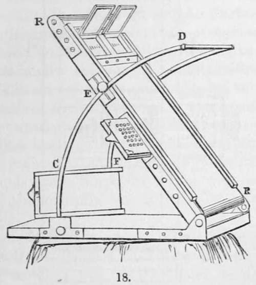
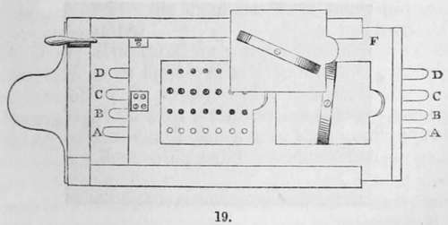
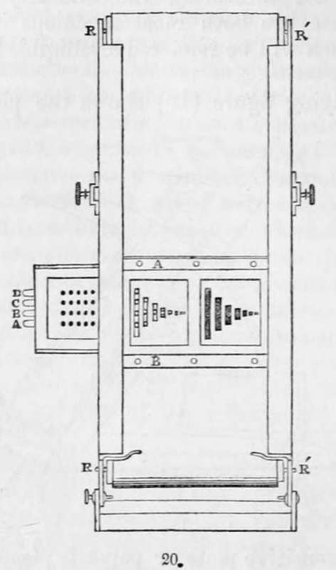
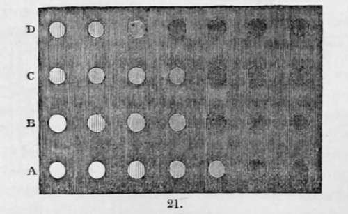
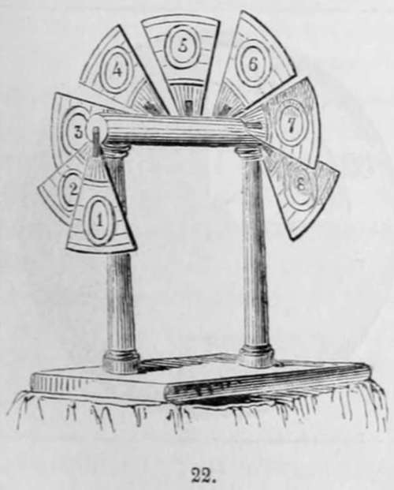
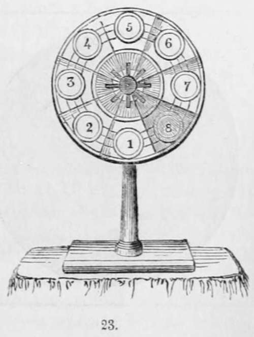
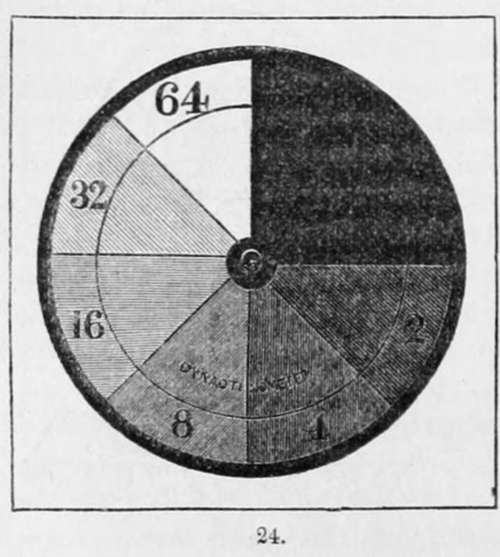
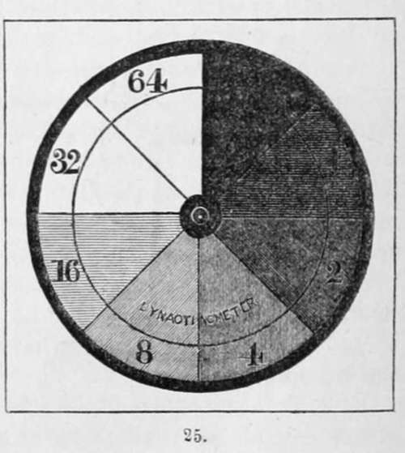

Section II. Instruments For Measuring Actinic Variations, Etc
Description
This section is from the book "A Manual Of Photography", by Robert Hunt. Also available from Amazon: A Manual of Photography.
Section II. Instruments For Measuring Actinic Variations, Etc
The Photographometer
M. Claudet has devised the Photographometer and the Dynactinometer for measuring the intensity of the actinic radiations. These are both most ingenious instruments, the operations of which will be rendered intelligible by the following description :-
The accompanying figure (18) shows the photographometer complete. The sensitive plate or paper is placed in a dark box, which is placed in an independent frame, as shown in Figs. 20 and 21, and as placed in its position at f in the adjoining cut. A black silk webbing being fixed to the moveable plate seen at the head of the instrument, and strained over two rollers, r, r, it will be evident that the sensitive plate is screened from light until the moveable slide falling down the mclined plane passes over it. The openings in this moveable plate are parallel to each other. They are seven in number, each opening being one-half of the following one, and double that of the preceding one. Thus, after the operation of the light, we have seven separate images, the different intensities of which represent the action of light during the intervals of time in the geometric progression of—1: 2 : 4 : 8: 16 : 32 : 64:
The box in which the plate or paper is placed for experiment, is pierced with holes, and these correspond with the slits in A B. (fig. 22). By inclining the instrument, which can be veryreadily done to any degree by means of the curved arms c d e, any velocity can be given to the falling screen, and thus the plate be exposed to the action of the chemical rays for any period of time we please. Fig. 20 shows the result obtained on a plate by this instrument ; the letters corresponding with the holes in the other woodcuts. In fig. 21 the screen with the vertical slits is shown at the moment it is supposed to be passing over the holes a b c d. In this example the plate had been exposed to the vapour of iodine, in such a manner that one zone had attained the first coating of yellow colour ; a second zone had reached the red ; a third the blue and green; and a fourth having passed through all these tints, had obtained the second yellow coating. The number of white circular spots on each vertical zone indicates the degree of sensitiveness of the various coatings; the less sensitive being the first coating of yellow, d, and the most sensitive the second yellow coating, A. This is shown by the deposit of mercury on the plate represented by the increased whiteness of the spots corresponding with the holes, each four vertical spots having been exposed for the same time to solar influence.
The Focimeter
M. Claudet has also devised a very ingenious instrument for focusing, which he calls his Focimeter. (Fig. 22.) This it will be seen from the accompanying woodcut consists merely of segments of a circle, numbered and placed at fixed distances apart, upon a movable axis. This is copied by the camera on a plate or paper, and the result is shown in the annexed figure (23), in which it will be seen different degrees of effect are supposed to have been produced. These determine the best focal point for any lens very readily, and it is really a most useful piece of apparatus in the hands of the photographer.
The Dynactinometer
The Dynactinometer is thus described by the inventor :—It consists of a thin metallic disc, perfectly black, having a slit extending from its centre to the circumference, fixed on an axis revolving through a permanent metallic disc perfectly white. The white disc has also a slit from its centre of the exact length of the radius of the black disc ; and by means of these two slits, which are so adjusted that the black disc can intersect the white disc, and by revolving, gradually cover the whole white area, the space of the white surface on which the black disc can be superposed forms itself a sort of dial, which is divided into any number of equal segments, all numbered. The inventor has adopted the number of twenty segments for a large circle inscribed on the dial, and of eight segments for a smaller circle, after the manner of the divisions of the Focimeter. but on the same plane. These eight segments are numbered in geometrical progression, 1, 2, 4, 8, 16, 32, 64.
The black disc may be made to revolve in such a manner that it shall cover a new segment of the large circle dining each second, or any other equal fraction of time. By that means the last segment will have received eight times more light than the first, the black disc having moved over the whole in eight seconds.
The differences of photogenic intensities are hardly observable when they follow the arithmetical progression : the instrument is so constructed that it may indicate the intensities in the geometrical progression. The first segment remains always covered, in order to be represented black on the daguerreotype plate and mark the zero of intensity : the second is exposed to light during 1', the third during 2", the fourth during 4", the fifth during 8", the sixth during 16", the seventh during 32", and the eighth during 64". This series, which could be extended by dividing the circle into a greater number of segments, is quite sufficient for all observations intended for practically measuring the intensity of the photogenic light, and for comparing the power of object-glasses.

Continue to:
- prev: Chapter IV. On The Photographic Registration Of Philosophical Instruments. Section I. Photographic Registration
- Table of Contents
- next: Section II. Instruments For Measuring Actinic Variations, Etc. Continued